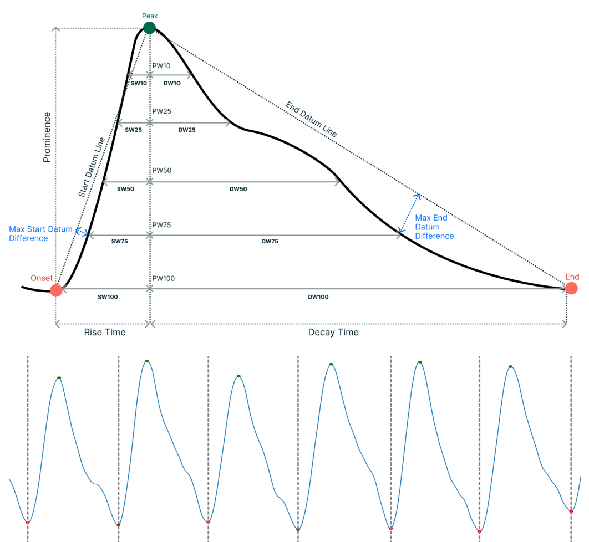

I recently completed my PhD at City University's Research Centre for Biomedical Engineering, where my research focused on addressing critical needs in neurocritical care by leveraging large and challenging clinical biomedical data. Prior to this, I obtained a master's degree in artificial intelligence from King's College London, and I hold an undergraduate degree in Computer Science from Newcastle University.
Doctoral Research

My research focused on contributing to the development of the first non-invasive, point-of-care device for intracranial pressure (ICP) monitoring. Traumatic brain injury (TBI) is classified as mild, moderate, or severe, with the majority of cases being mild or moderate. ICP monitoring is a “gold standard” monitoring modality for severe traumatic brain injury (TBI) patients. In 21st century the "gold standard" approach to monitoring is through the drilling of a burr hole and insertion of a probe through the skull into the brain in a procedure under a general anaesthetic. It is an invasive, high risk and expensive procedure reserved for severe TBI patients and only accessible in a hospital setting.
Effective ICP monitoring and intervention can reduce secondary brain injury and patient mortality. However, millions of mild and moderate TBI patients lack access to continuous, quantitative assessment due to the lack of an effective non-invasive monitoring modality.
My research utilised data collected with an in-house, non-invasive ICP (nICP) sensor, leveraging the largest clinically collected photoplethysmography (PPG) dataset labelled with invasive ICP data to date, sourced from patients at the Royal London Hospital. The research focused on statistical analysis, algorithm development, and the implementation of machine learning models to evaluate the relationship between PPG features and ICP in TBI patients.
This work contributes to the ongoing efforts to develop a non-invasive, point-of-care device for ICP monitoring, aimed at reducing barriers to ICP monitoring and making effective screening and intervention more accessible to a broader patient population.
My research focused on contributing to the development of the first non-invasive, point-of-care device for intracranial pressure (ICP) monitoring. Traumatic brain injury (TBI) is classified as mild, moderate, or severe, with the majority of cases being mild or moderate. ICP monitoring is a “gold standard” monitoring modality for severe traumatic brain injury (TBI) patients. In 21st century the "gold standard" approach to monitoring is through the drilling of a burr hole and insertion of a probe through the skull into the brain in a procedure under a general anaesthetic. It is an invasive, high risk and expensive procedure reserved for severe TBI patients and only accessible in a hospital setting.
Effective ICP monitoring and intervention can reduce secondary brain injury and patient mortality. However, millions of mild and moderate TBI patients lack access to continuous, quantitative assessment due to the lack of an effective non-invasive monitoring modality.
My research utilised data collected with an in-house, non-invasive ICP (nICP) sensor, leveraging the largest clinically collected photoplethysmography (PPG) dataset labelled with invasive ICP data to date, sourced from patients at the Royal London Hospital. The research focused on statistical analysis, algorithm development, and the implementation of machine learning models to evaluate the relationship between PPG features and ICP in TBI patients.
This work contributes to the ongoing efforts to develop a non-invasive, point-of-care device for ICP monitoring, aimed at reducing barriers to ICP monitoring and making effective screening and intervention more accessible to a broader patient population.
Other Interests
When I am away from my computer, I really enjoy cycling, Brazilian Jiu-Jitsu (BJJ) and most things water related, but especially freediving and spearfishing. In 2023 with two of my friends I cycled from London to Barcelona which was awesome fun! I recently got my blue belt in BJJ and when I can I love to go freediving. Being half greek, I do most of my diving when I visit family in Greece, exploring wrecks and underwater topology, I am working on beating my depth record of ~35 meters.
When I am away from my computer, I really enjoy cycling, Brazilian Jiu-Jitsu (BJJ) and most things water related, but especially freediving and spearfishing. In 2023 with two of my friends I cycled from London to Barcelona which was awesome fun! I recently got my blue belt in BJJ and when I can I love to go freediving. Being half greek, I do most of my diving when I visit family in Greece, exploring wrecks and underwater topology, I am working on beating my depth record of ~35 meters.